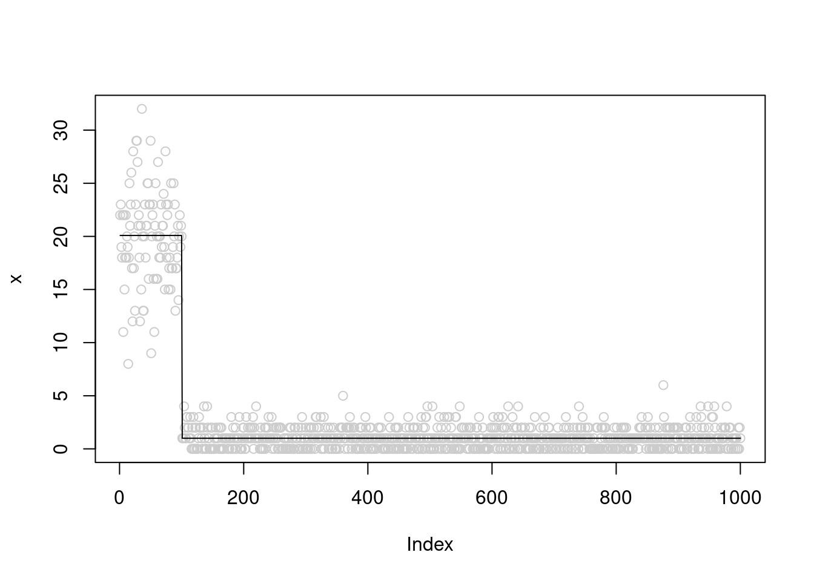
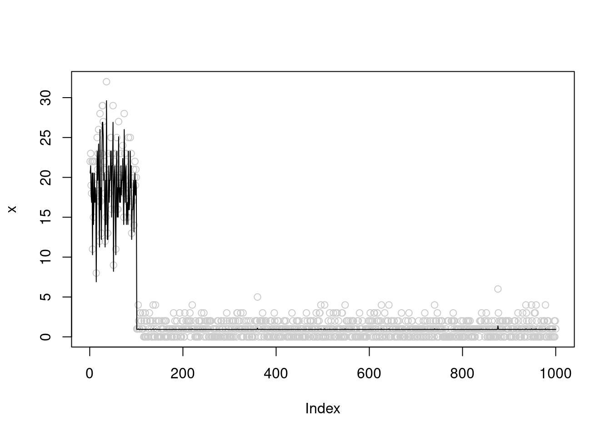
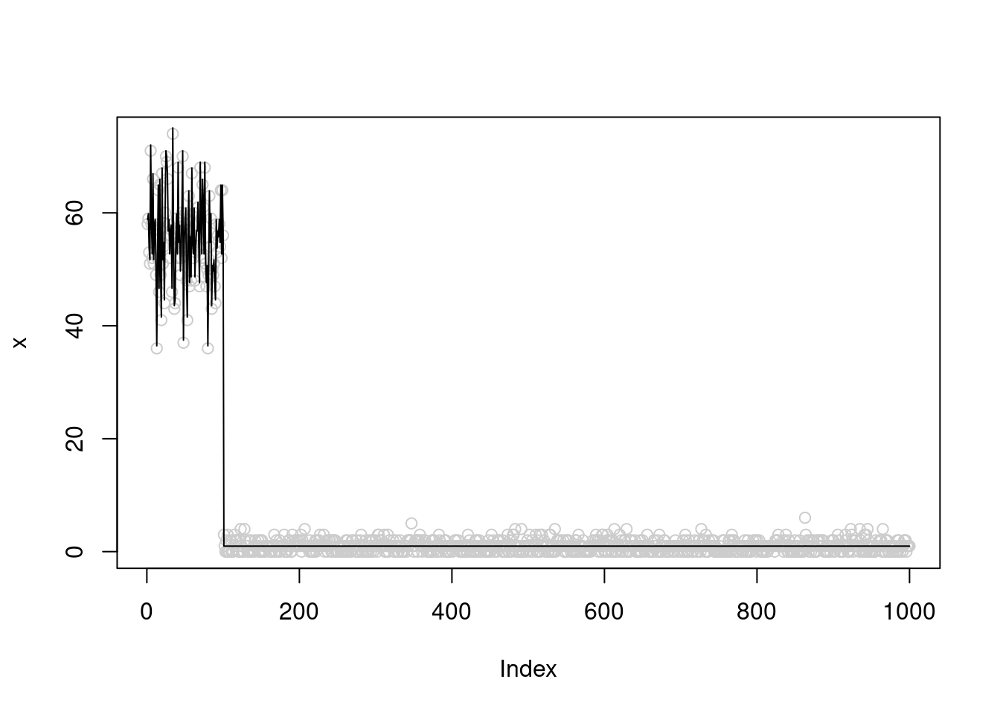
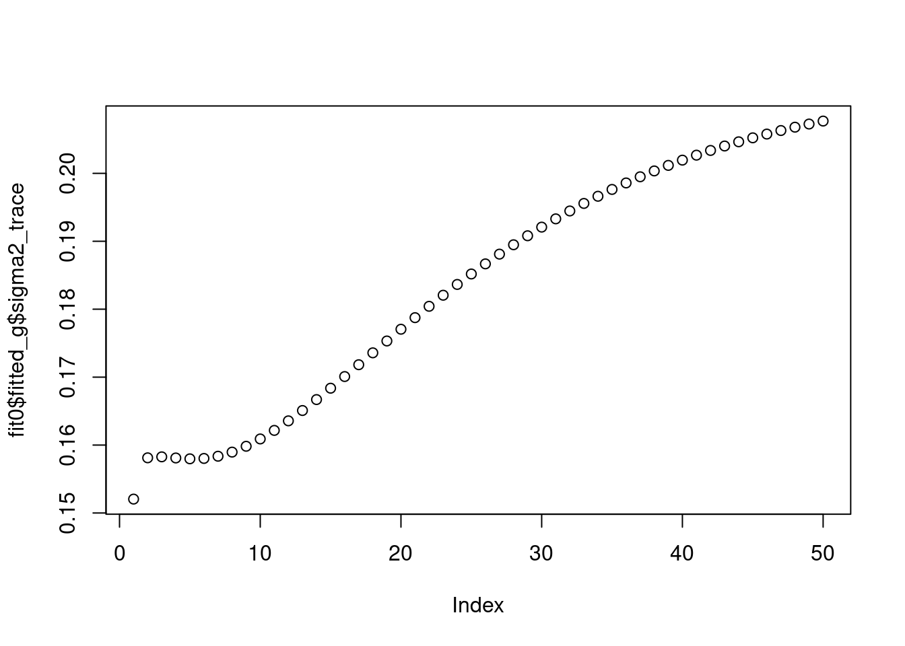
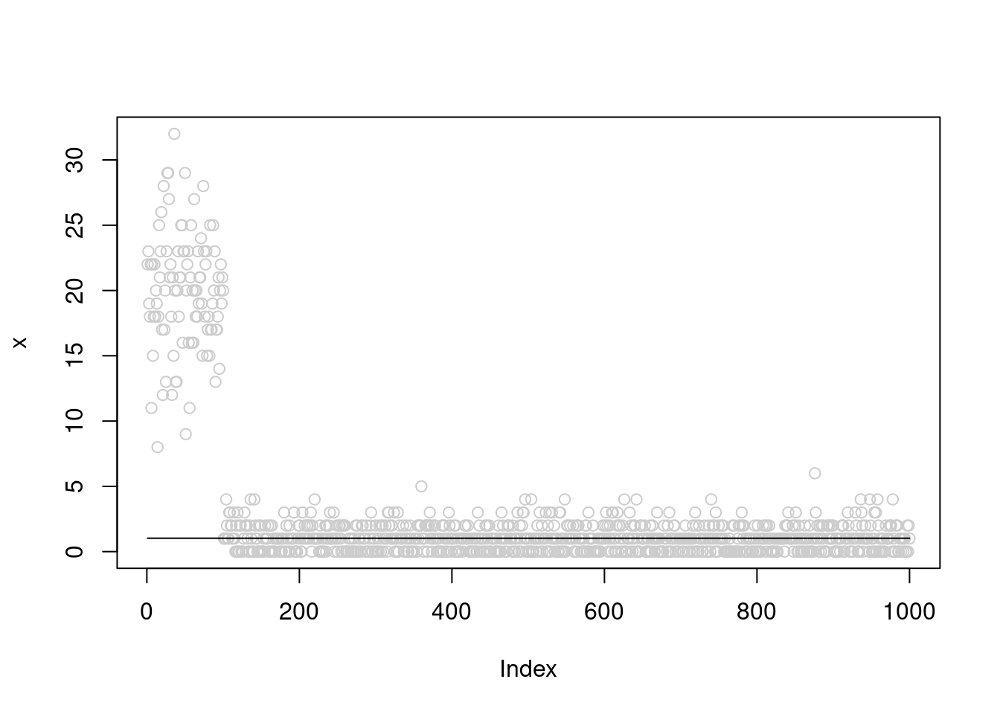
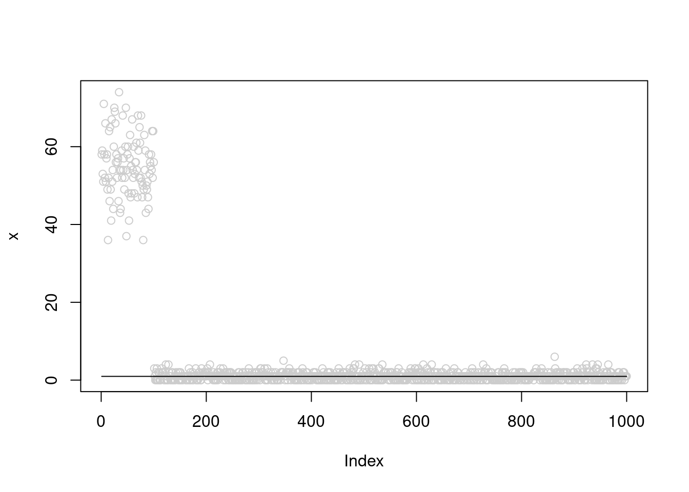

poisson mean split local optimum
DongyueXie
2023-02-06
Last updated: 2023-02-06
Checks: 7 0
Knit directory: gsmash/
This reproducible R Markdown analysis was created with workflowr (version 1.7.0). The Checks tab describes the reproducibility checks that were applied when the results were created. The Past versions tab lists the development history.
Great! Since the R Markdown file has been committed to the Git repository, you know the exact version of the code that produced these results.
Great job! The global environment was empty. Objects defined in the global environment can affect the analysis in your R Markdown file in unknown ways. For reproduciblity it’s best to always run the code in an empty environment.
The command set.seed(20220606) was run prior to running
the code in the R Markdown file. Setting a seed ensures that any results
that rely on randomness, e.g. subsampling or permutations, are
reproducible.
Great job! Recording the operating system, R version, and package versions is critical for reproducibility.
Nice! There were no cached chunks for this analysis, so you can be confident that you successfully produced the results during this run.
Great job! Using relative paths to the files within your workflowr project makes it easier to run your code on other machines.
Great! You are using Git for version control. Tracking code development and connecting the code version to the results is critical for reproducibility.
The results in this page were generated with repository version 0a9bdef. See the Past versions tab to see a history of the changes made to the R Markdown and HTML files.
Note that you need to be careful to ensure that all relevant files for
the analysis have been committed to Git prior to generating the results
(you can use wflow_publish or
wflow_git_commit). workflowr only checks the R Markdown
file, but you know if there are other scripts or data files that it
depends on. Below is the status of the Git repository when the results
were generated:
Ignored files:
Ignored: .Rhistory
Ignored: .Rproj.user/
Untracked files:
Untracked: analysis/movielens.Rmd
Untracked: analysis/profiled_obj_for_b_splitting.Rmd
Untracked: code/binomial_mean/binomial_smooth_splitting.R
Untracked: code/binomial_mean/test_binomial.R
Untracked: code/poisson_smooth/pois_reg_splitting.R
Untracked: data/ml-latest-small/
Untracked: output/droplet_iteration_results/
Untracked: output/ebpmf_pbmc3k_vga3_glmpca_init.rds
Untracked: output/pbmc3k_iteration_results/
Untracked: output/pbmc_no_constraint.rds
Unstaged changes:
Modified: analysis/index.Rmd
Modified: code/binomial_mean/binomial_mean_splitting.R
Note that any generated files, e.g. HTML, png, CSS, etc., are not included in this status report because it is ok for generated content to have uncommitted changes.
These are the previous versions of the repository in which changes were
made to the R Markdown
(analysis/poisson_mean_split_local_optimum.Rmd) and HTML
(docs/poisson_mean_split_local_optimum.html) files. If
you’ve configured a remote Git repository (see
?wflow_git_remote), click on the hyperlinks in the table
below to view the files as they were in that past version.
| File | Version | Author | Date | Message |
|---|---|---|---|---|
| Rmd | 0a9bdef | DongyueXie | 2023-02-06 | wflow_publish("analysis/poisson_mean_split_local_optimum.Rmd") |
Introduction
\[y_i\sim Poisson(exp(\mu_j)),\mu_j|b_j\sim N(b_j,\sigma^2),b_j\sim g(\cdot).\]
We show in a simple POisson mean example, there are two local optimums - one where \(g_b\) is a point mass, one where \(g_b\) is the one we are interested in.
library(vebpm)
n = 1000
set.seed(12345)
mu = c(rep(3,100),rep(0,n-100))
x = rpois(n,exp(mu))
plot(x,col='grey80')
lines(exp(mu))
In the first example we initialize \(\sigma^2=0.5\), ans we can see that the final \(sigma^2\) is around 0.22
fit0 = pois_mean_split(x,sigma2=0.5)
plot(x,col='grey80')
lines(fit0$posterior$mean_exp_b)
plot(fit0$fitted_g$sigma2_trace)
fit0$fitted_g$g_b$pi
[1] 0.8656205 0.0000000 0.0000000 0.0000000 0.0000000 0.1343795 0.0000000
[8] 0.0000000
$mean
[1] -0.0760271 -0.0760271 -0.0760271 -0.0760271 -0.0760271 -0.0760271 -0.0760271
[8] -0.0760271
$sd
[1] 0.0000000 0.4948273 0.8264801 1.2113393 1.6943897 2.3201300 3.1430577
[8] 4.2337875
attr(,"class")
[1] "normalmix"
attr(,"row.names")
[1] 1 2 3 4 5 6 7 8fit0$elbo[1] -3047.729WE try to initialize \(\sigma^2=0.1\), and we can see that the final \(sigma^2\) is still around 0.22
fit0 = pois_mean_split(x,sigma2=0.1)
plot(x,col='grey80')
lines(fit0$posterior$mean_exp_b)
plot(fit0$fitted_g$sigma2_trace)
fit0$fitted_g$g_b$pi
[1] 0.8769104 0.0000000 0.0000000 0.0000000 0.0000000 0.0000000 0.1230896
[8] 0.0000000 0.0000000
$mean
[1] -0.0316568 -0.0316568 -0.0316568 -0.0316568 -0.0316568 -0.0316568 -0.0316568
[8] -0.0316568 -0.0316568
$sd
[1] 0.0000000 0.4045662 0.6757223 0.9903795 1.3853170 1.8969163 2.5697342
[8] 3.4615046 4.6484273
attr(,"class")
[1] "normalmix"
attr(,"row.names")
[1] 1 2 3 4 5 6 7 8 9fit0$elbo[1] -3044.584So this is a local optimum and is the one that gives the results we’d love to see.
ON the other hand If we initialize \(\sigma^2\) to be bigger at \(\sigma^2 = 1\), then \(\sigma^2\) converges to 1.8 and \(g_b\) goes to a point mass.
fit0 = pois_mean_split(x,sigma2=1)
plot(x,col='grey80')
lines(fit0$posterior$mean_exp_b)
fit0$fitted_g$sigma2_trace [1] 1.233145 1.391178 1.518241 1.615259 1.684353 1.731559 1.763087 1.783876
[9] 1.797480 1.806341 1.812095 1.815822fit0$fitted_g$g_b$pi
[1] 1 0 0 0 0
$mean
[1] 0.02648361 0.02648361 0.02648361 0.02648361 0.02648361
$sd
[1] 0.000000 1.196248 1.998021 2.928420 4.096198
attr(,"class")
[1] "normalmix"
attr(,"row.names")
[1] 1 2 3 4 5fit0$elbo[1] -3031.456Try a larger init value of \(\sigma^2\) at 3, then same thing happens.
fit0 = pois_mean_split(x,sigma2=3)
plot(x,col='grey80')
lines(fit0$posterior$mean_exp_b)
fit0$fitted_g$sigma2_trace[1] 2.435644 2.049915 1.941053 1.894578 1.868205 1.851837 1.841424 1.834748
[9] 1.830450fit0$fitted_g$g_b$pi
[1] 1 0 0 0 0
$mean
[1] 0.01644114 0.01644114 0.01644114 0.01644114 0.01644114
$sd
[1] 0.000000 1.203702 2.010471 2.946668 4.121722
attr(,"class")
[1] "normalmix"
attr(,"row.names")
[1] 1 2 3 4 5fit0$elbo[1] -3031.458The ELBO is larger when \(g_b\) is a point mass and \(\sigma^2\) is larger.
Maybe we should not start with a too large \(\sigma^2\) because \(g_b\) being a point mass is a local optimum and in most cases we are not very interested in. I find that the starting \(\sigma^2\) should not be greater than \(var(\bar\mu_i)\), and perhaps smaller.
sessionInfo()R version 4.2.2 Patched (2022-11-10 r83330)
Platform: x86_64-pc-linux-gnu (64-bit)
Running under: Ubuntu 22.04.1 LTS
Matrix products: default
BLAS: /usr/lib/x86_64-linux-gnu/openblas-pthread/libblas.so.3
LAPACK: /usr/lib/x86_64-linux-gnu/openblas-pthread/libopenblasp-r0.3.20.so
locale:
[1] LC_CTYPE=en_US.UTF-8 LC_NUMERIC=C
[3] LC_TIME=en_US.UTF-8 LC_COLLATE=en_US.UTF-8
[5] LC_MONETARY=en_US.UTF-8 LC_MESSAGES=en_US.UTF-8
[7] LC_PAPER=en_US.UTF-8 LC_NAME=C
[9] LC_ADDRESS=C LC_TELEPHONE=C
[11] LC_MEASUREMENT=en_US.UTF-8 LC_IDENTIFICATION=C
attached base packages:
[1] stats graphics grDevices utils datasets methods base
other attached packages:
[1] vebpm_0.4.0 workflowr_1.7.0
loaded via a namespace (and not attached):
[1] Rcpp_1.0.9 horseshoe_0.2.0 invgamma_1.1 lattice_0.20-45
[5] getPass_0.2-2 ps_1.7.2 rprojroot_2.0.3 digest_0.6.31
[9] utf8_1.2.2 truncnorm_1.0-8 R6_2.5.1 evaluate_0.19
[13] highr_0.9 httr_1.4.4 ggplot2_3.4.0 pillar_1.8.1
[17] rlang_1.0.6 rstudioapi_0.14 ebnm_1.0-11 irlba_2.3.5.1
[21] whisker_0.4.1 callr_3.7.3 jquerylib_0.1.4 nloptr_2.0.3
[25] Matrix_1.5-3 rmarkdown_2.19 splines_4.2.2 stringr_1.5.0
[29] munsell_0.5.0 mixsqp_0.3-48 compiler_4.2.2 httpuv_1.6.7
[33] xfun_0.35 pkgconfig_2.0.3 SQUAREM_2021.1 htmltools_0.5.4
[37] tidyselect_1.2.0 tibble_3.1.8 matrixStats_0.63.0 fansi_1.0.3
[41] dplyr_1.0.10 later_1.3.0 grid_4.2.2 jsonlite_1.8.4
[45] gtable_0.3.1 lifecycle_1.0.3 git2r_0.30.1 magrittr_2.0.3
[49] scales_1.2.1 ebpm_0.0.1.3 cli_3.4.1 stringi_1.7.8
[53] cachem_1.0.6 fs_1.5.2 promises_1.2.0.1 bslib_0.4.2
[57] generics_0.1.3 vctrs_0.5.1 trust_0.1-8 tools_4.2.2
[61] glue_1.6.2 processx_3.8.0 parallel_4.2.2 fastmap_1.1.0
[65] yaml_2.3.6 colorspace_2.0-3 ashr_2.2-54 deconvolveR_1.2-1
[69] knitr_1.41 sass_0.4.4